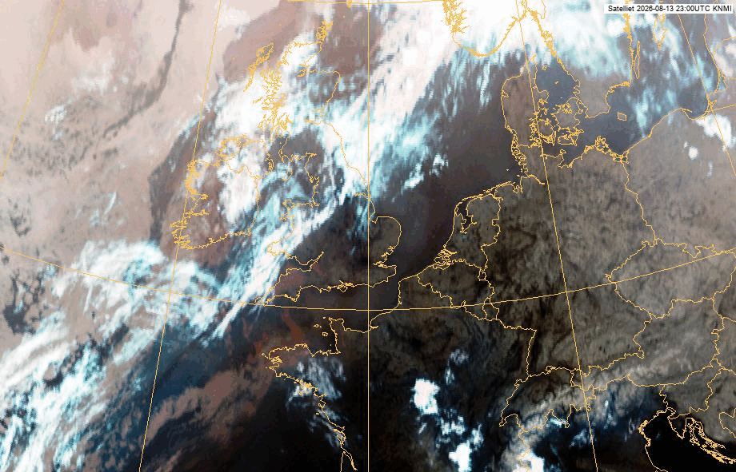
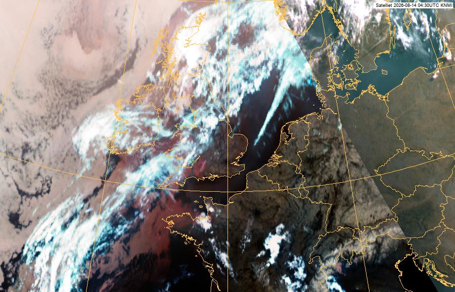

Gegenereerd op 14-08-2026 05:18 · bron: KNMI / Weerlive.nl
Vandaag is vanwege de (aanhoudende) hitte het Nationaal Hitteplan in het hele land actief, morgen alleen nog in het zuidoosten. Ouderen en mensen met een kwetsbare gezondheid kunnen gezondheidsklachten krijgen door een langere periode van hitte. Vanaf zaterdag volgt afkoeling. DetailsVandaag loopt de maximumtemperatuur uiteen van 33°C in het noorden tot 37°C in het zuiden en zuidoosten. Zeer lokaal is 38°C mogelijk. De hittekracht is dan 7-8, plaatselijk 9. Ook de nacht van vrijdag op zaterdag verloopt warm met minima rond 20°C in stedelijk gebied. Zaterdag overdag volgt afkoeling en wordt het alleen in het zuidoosten nog tropisch warm met ca. 32°C (hittekracht 6-7). Uitgifte: 14/08/2026 04:09 uur LT
Vanaf: 14-08-2026 04:00

